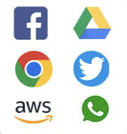

This webpage is 100% devoted to teaching you about the History of the Internet. That's right, the thing you are using as you're reading this. You might not realize it, but the Internet plays a big part in your daily life. A lot more than recommended in fact. The internet used to be exclusive to research and the government. As it was upgraded over the years, the Internet has been upgraded to be a constant use in daily life for many people. Here is a TIMELINE to show you a quick debrief of the history:
| Web 1
|

Web 2
|
Web 3
|
Write down a year to see what web was in use during that time period...